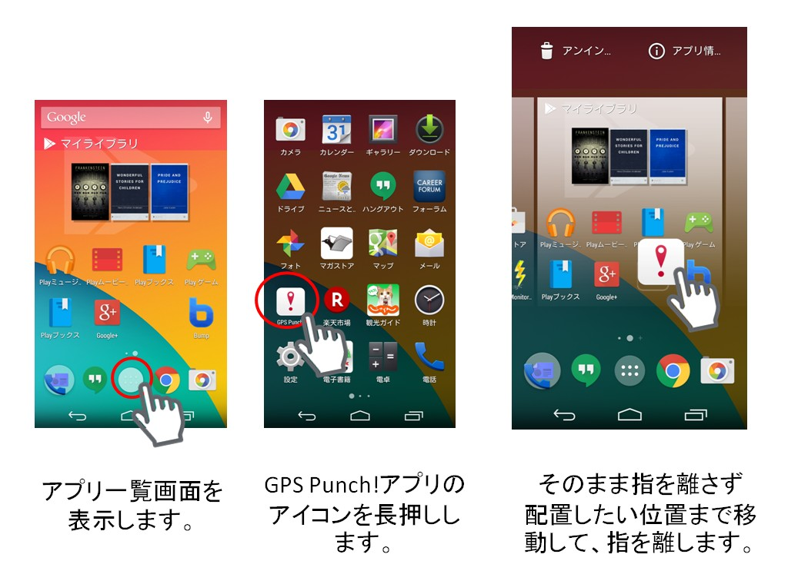

Android¶
ver.3.5.5.0 (2015年11月27日)¶
主な変更点¶
- 安定性の向上および、一部の不具合を修正しました。
改善¶
- 簡易報告および報告書でアップロードした写真のサイズが以前より小さくなる場合がある不具合を修正しました。
ver.3.5.4.0 (2015年11月19日）¶
主な変更点¶
Androidのサポートを4.0.3以降に変更しました。
全般
- グループ管理者の権限設定の見直しに伴い、グループ管理者は権限（グループ権限、スポット権限、予定権限）の変更ができないようになりました。
履歴、メンバー、報告閲覧の写真を拡大してプレビュー表示できるようになりました。
- 安定性の向上および、一部の不具合を修正しました。
- スポット
- スポット作成または編集で郵便番号を自動で補完するようになりました。
- 報告書
- 報告書作成または編集で戻るボタンを押した時に、変更内容が存在する場合は確認のアラートを表示するように変更しました。
- 報告書のプレースホルダーのカラーを調整しました。
改善¶
- スポット
- スポットのソート順をスポット以外のメニューに遷移した場合でも維持するように修正しました。
- スポットのソート順がリストと地図で異なる場合がある不具合を修正しました。
- スポット編集でスポットタグが選択されていない場合がある不具合を修正しました。
- スポットから予定を作成する場合に作成権限がない場合でも作成画面に進めてしまう不具合を修正しました。
- 予定
- 予定作成または編集のスポット選択で距離の単位が表示されない不具合を修正しました。
- 報告書
- 報告閲覧を表示している状態で復帰した場合にクラッシュする場合がある不具合を修正しました。
- 報告書の編集でスクロールの位置が直前のテキストフィールドに戻る場合がある不具合を修正しました。
- 設定
- お問い合わせで写真が添付できない場合がある不具合を修正しました。
ver.3.5.2.0 (2015年8月31日）¶
主な変更点¶
- スポット
- スポットでリストがソートできるようになりました。
- 一部のデザインおよび、文言を変更しました。
- 安定性の向上および、一部の不具合を修正しました。
改善¶
- ホーム
- チェックイン可能なスポットが多い場合に処理が遅くなる不具合を修正しました。
- ステータスの取り消し時間の表示フォーマットが正しくない不具合を修正しました。
- スポット
- スポット作成、編集で住所取得に失敗する場合がある不具合を修正しました。
- 報告書
- 報告書編集でスポットの顧客担当者を複数選択した状態の報告書をそのまま再送信した場合に顧客担当者が先頭だけ選択された状態になってしまう場合がある不具合を修正しました。
- 報告書編集でスポットの顧客担当者の項目を編集する場合に選択状態から未選択状態になってしまう場合がある不具合を修正しました。
- 報告閲覧
- 報告閲覧を表示した状態でバックグラウンドから復帰した場合に強制終了する場合がある不具合を修正しました。
ver.3.5.0.0 (2015年7月27日）¶
主な変更点¶
スポットと報告書の検索機能が強化されました。
- スポット
- 検索条件にスポット作成日、スポット更新日を追加しました。
- 検索条件の前回訪問日が日数や月数で指定できるようになりました。
- 検索条件に名前をつけて保存できるようになりました。
- スポットの詳細画面の地図表示エリアを拡大でき、地図の縮尺もできるようになりました。
- 初期表示とキーワードで検索した時以外は地図を自動縮尺しないように変更しました。
- 報告書閲覧
- 検索条件の報告日に「今週」と「今月」を追加しました。
- 検索条件に名前をつけて保存できるようになりました。
- 検索結果に報告書の件数とスポット名を表示するようにしました。
- ホーム
- スポット表示の仕組みをスポット画面と同様にし、最大で300件まで表示するよう変更しました。
- 予定を表示している時以外は地図を自動縮尺しないように変更しました。
- 予定
- 当日の予定を表示する際に、終了していない予定のみが画面に収まるよう自動縮尺するようにしました。
- 全般
- 安定性の向上および、一部の不具合を修正しました。
ver.3.4.7.2 (2015/06/15)¶
主な変更点¶
- スポット検索画面で検索を開始した時の地図の中心点の住所を表示するようにしました。
- 安定性の向上および、一部の不具合を修正しました。
改善¶
- アカウント一覧画面で稀にクラッシュする不具合を修正しました。
- 強制ログアウトが機能しない不具合を修正しました。
- Android 5.0以上の端末で通知アイコンが正常に表示されない不具合を修正しました。
- Android 5.0未満の端末の通知アイコンのデザインを変更しました。
ver.3.4.6.1 (2015/04/16)¶
主な変更点¶
- 不具合を修正しました。
改善¶
- Android4.0未満の端末でチェックボックス、ラジオボタンの項目を選択した際にクラッシュする不具合を修正しました。
ver.3.4.6.0 (2015/04/13)¶
主な変更点¶
- 安定性の向上および、一部の不具合を修正しました。
改善¶
- スポット詳細画面から報告書を書く場合に必ずチェックインしてしまう不具合を修正しました。
- スリープから復帰した場合に稀にクラッシュする不具合を修正しました。
- Android5.1の端末で時刻の表示を12時間表記にしている場合に報告閲覧画面でクラッシュする不具合を修正しました。
ver.3.4.5.0 (2015/03/31)¶
主な変更点¶
- 報告書の作成・編集で日付選択フィールドの入力した日付をクリアできるようになりました。
- 報告書の作成・編集で時間選択フィールドの入力した時間をクリアできるようになりました。
- 報告書の作成で時間選択フィールドのデフォルト値として現在時刻をセットできるようになりました。
- 設定の一般設定項目の名称を基本設定に変更しました。
- 安定性の向上および、一部の不具合を修正しました。
改善¶
- 報告書の作成で日付選択フィールドのデフォルト値として現在日付がセットされない場合がある不具合を修正しました。
- 行動予定の作成・編集で担当者を指定していない状態で登録できる不具合を修正しました。
- 行動予定の作成・編集で必須項目が入力されていない状態で登録しようとした場合にエラーメッセージが表示されない不具合を修正しました。
- スポット画面のランドマーク検索で空白で検索できる不具合を修正しました。
- 報告閲覧画面でグループ切り替え前の報告書が表示されてしまう場合がある不具合を修正しました。
ver.3.4.4.0 (2015/03/16)¶
主な変更点¶
- ホームで移動線を表示する場合に、履歴画面で設定しているルート自動記録のGPS誤差表示を適用するようになりました。
- スポットで総件数が表示されるようになりました。
改善¶
- 報告書から顧客担当者を作成する権限が正しくない場合がある不具合を修正しました。
- 予定・履歴画面等で月切り替えのボタンが押下しづらくなる現象を修正しました。
- 予定のタイムゾーン選択に検索バーを追加しました。
- 予定の編集権限をiOSに合わせて修正しました。
- メンバーリストに自分のユーザーログインIDを表示するよう修正しました。
- 通知からアプリを起動した場合に画面が真っ暗なまま停止する場合がある不具合を修正しました。
- 打刻時にチェックインを行った報告書のスポット項目を未選択状態にすると、報告書からスポット項目が消える場合がある不具合を修正しました。
ver.3.4.3 (2015/2/18）¶
主な変更点¶
- スポットの詳細から報告書が作成ができるようになりました。（チェックイン可能な場所であればチェックインも併せてできます。）
- 顧客担当者の備考が参照・登録・編集できるようになりました。

{kind=link}
例：画像はNexus5の場合
- 上記の操作ではうまくいかない場合は、ご利用中の端末キャリアのサイト等で「アプリのショートカットの作成方法」をご覧ください。
改善¶
- ホーム
- ホーム画面の検索条件とチェックインの検索条件を同期するよう修正しました。
- メニュー画面から画面遷移しようとするとホームへ戻る問題を修正しました。
- スポット
- 顧客担当者の役職のアイコンを更新しました。
- スポットのコメントの文字制限を3000文字までに変更しました。
- 報告閲覧
- 報告者、報告書名、行動種別に検索バーをつけました。
- 報告書のスポット名条件に「null」の文字列が入る問題を修正しました。
- 報告書のスポット名条件が検索条件に含まれなかった問題を修正しました。
- その他
- seekbarのスタイルを更新しました。
アップデート時の注意点¶
注釈
今回の変更でアプリの構成を大きく変更したため、アプリをアップデートすると 端末ホーム上のショートカットが消去されます。 (一見するとアプリをアップデートしたらアプリが消えたように見えてしまいます。) 大変お手数ですが、下記の手順のように、アプリ一覧からGPS Punch!を選択して再度ショートカットを作成してください。
ver.3.4.2.1 (2015/1/14)¶
主な変更点¶
- ホームの地図、スポットのリストと地図でスポットが最大300件、まとめて表示できるようになりました。（300件目以降のスポットは地図の中心を移動させて検索地点を変更するか、検索条件を指定して絞り込むことで表示できます。）
- スポットの地図でスクロールすると、スポットを再検索するようになりました。
- スポットの検索で「スポット名」、「カナ」、「スポットコード」、「所在地」、「電話番号」、「コメント」から検索できるようになりました。
- スポットの地図で所在地またはランドマークを検索して、地図の中心を移動できるようになりました。
- スポットの権限に「編集」と「削除」を追加しました。（今回より一般ユーザーのスポットの作成、編集、削除が個別の権限で設定できますが、以前のバージョンは作成権限のみでの判断になります。）
改善¶
- 一部画面でエラーが発生した場合に、ユーザーに通知が行われない不具合を修正しました。
- ある特定の条件下で、退勤以外の ステータス は全て ルート自動記録 をする事象を修正しました。（途中から ルート自動記録 の契約を開始した場合に発生した事例が過去にありました。）
- スポット詳細画面項目名をアイコンで統一しました
ver.3.4.2.0 (2014/12/16）¶
主な変更点¶
- 顧客担当者に「顧客担当者名(カナ)」を入力できるようにしました。
- 顧客担当者の「電話番号」「メールアドレス」を最大4件まで設定できるようになりました。
- スポットに「スポットコード」「スポット名(カナ)」が入力できるようになりました。（カナは以前より表示のみされていましたが、今回より登録、編集ができるようになります。）
改善¶
- タイトルが長い場合に戻るボタンに重なって表示される現象を修正しました。
- 簡易報告・報告書に検索条件を表示するようにしました。
- 報告書検索のスポット名の文字数を制限しないように修正しました。
- 報告書検索の報告書名・報告者を名前でソートして表示するよう修正しました。
- 報告書からスポットを作成する場合のボタンアイコンを修正しました。
- 報告書のスポット名が必須の場合に、スポット未選択の報告書が送信できる問題を修正しました。
- 報告書のラジオボタン、チェックボックスの必須チェックが行われない不具合を修正しました。
- 報告書の下書きが削除されない不具合を修正しました。
- 一覧画面のレイアウトを調整しました。
- スポット詳細で詳細情報をすべて表示するようにしました。
- スポット詳細の報告一覧に削除されたユーザーが含まれていた場合、報告者絞り込み画面でクラッシュする不具合を修正しました。
- アクティブなユーザーのプッシュ通知のみ表示するよう修正しました。
- メニュー画面の「戻る」ボタンを削除しました。
- 軽微な文言の変更・修正を行いました。
ver.3.4.1.0 (2014/11/12）¶
主な変更点¶
- アカウント情報変更時に確認のため、現在のパスワードを入力するようにしました。
- パスワード設定時に確認のためのパスワード入力処理を追加しました。
- URLが設定されていないスポットはスポット名でWeb検索するようにしました。
- アカウント追加時のダイアログをiOSスタイルと同様にしました。
改善¶
- iOS版で作成した報告書のラジオボタンフィールドの内容がAndroid側で正しく表示されない問題を修正しました。
- スポット検索範囲のデフォルト値を半径5kmに変更しました。（予定作成・編集時）
- アプリ起動中は報告閲覧の検索条件を保持するように変更しました。
- 報告書のレイアウトを修正しました。
- 無料ユーザーの場合に「報告書」タブを表示しないように修正しました。
- ホームでアカウントを切り替えた場合にマーカーが切り替わらない場合がある問題を修正しました。
- スポット・予定作成画面の右上にあるボタンを「保存」という文言に修正しました。
- 最新の打刻がすぐに送信されない場合がある問題を修正しました。
- v2.1.0以前のアプリから更新できない問題を修正しました。
- スポットタグの選択解除方法を変更しました。
- 擬似ロケーションが有効な場合にアプリがフリーズする問題を修正しました。
- お知らせの詳細画面からバックキーで戻ると未読バッジが消えない問題を修正しました。
- 軽微な文言修正をしました。
- 一部通信の削減をしました。
ver.3.4.0 (2014/10/14）¶
主な変更点¶
改善¶
- マップを表示をしようとした時に落ちる問題を修正しました。
- 報告書の入力文字数が0となってしまう問題を修正しました。
- ホーム画面の表示設定画面でバックキー押下時にアプリが終了しないように修正しました。
- 通信失敗時に読込中ダイアログが消えない問題を修正しました。
- スポット追加・編集・削除の完了時に遷移しない問題を修正しました。
- 進行順ステータス を削除するとアプリが起動できなくなる問題を修正しました。
- チェックボックスのタップ可能な範囲が大きくなるよう修正しました。
- GoogleMapsがインストールされていない場合、特定の条件でクラッシュする問題を修正しました。
- 報告書の作成・編集時にテキストフィールドへのフォーカスを行わないように修正しました。
- マルチアカウント 設定時、設定を同期すると使用していないアカウントのメンバー情報が消えてしまう問題を修正しました。
- 未送信データの送信間隔を調整しました。
- 同期の処理を最適化しました。
- 一部ダイアログの文言、英語文言を修正しました。
- その他軽微な不具合を修正しました。
ver.3.3.1 (2014/08/19）¶
主な変更点¶
マルチアカウント のアカウント数の上限を増やして、iOSのスタイルに更新しました。 そして、このリリースでジオコーディングとバージョンアップのフィーチャーを紹介します。
- 報告書のチェックボックス・ラジオボタンの選択方法を変更しました。（iOSと同じように別画面で入力）
- インストールされているアプリのバージョンが古い場合にバージョンアップの催促を行う機能を追加しました。
- 端末の位置情報取得設定の情報をGPSとネットワークで分けて送信するように変更しました。
- マルチアカウント のアカウント数の上限を3から5に変更しました。
- アカウント色にブルーとシャンパンを追加しました。
改善¶
- チェックイン時のスポットリスト一覧で複数回絞り込みを行うと検索結果が消えてしまう問題を修正しました。
- 予定画面でリストのアイテムをタップして地図を表示した際に初回だけショートカットボタンが表示されない問題を修正しました。
- スポット・メンバー・予定画面の地図でマーカーをタップしても現在位置表示マークがオフにならない問題を修正しました。
- ホーム画面で移動線を表示する際にトラッキングデータが含まれていない問題を修正しました。
- 管理画面からステータスを削除した場合の挙動を修正しました。
- ユーザー閲覧権限が「管理者のみ」だった場合の一般ユーザーの参照範囲を修正しました。
- 場所無しの予定が存在する場合に地図上のマーカーが正しいデータと紐付かない問題を修正しました。
- カメラ関連のサービス設定が強制的に有効になってしまう問題を修正しました。
- スポット画面等のリストで読み込みに失敗しても読み込みアニメーションが終了せず、再読み込み出来ない問題を修正しました。
- アカウントの同期を行うと端末内から他アカウントの報告書フォーマットが消えてしまう問題を修正しました。
- 予定作成・編集時のタイムゾーンの扱いがiOS版と違ってしまっている問題を修正しました。
- ホーム画面のスポット表示半径を500mから1000mに変更しました。（iOS版と同じ半径に修正）
- ホーム画面の地図を動かした場合にスポットの再検索を行うロジックを追加しました。（iOS版と同じ挙動に修正）
- 履歴画面で ルート自動記録 の表示する設定をオフにしても地図画面では ルート自動記録 を含めた移動線を表示するように修正しました。
- 報告書のスポット選択時に新しい打刻順でリストを表示するように修正しました。
- 人数オーバーでグループ参加が出来なかった場合のエラーメッセージを追加しました。
- スポット作成・編集時の照準アイコン差し替えと初期ズームレベルを変更しました。
- 管理画面からスポットピン画像を追加・変更してアプリを同期しても反映されない場合がある問題を修正しました。
- 複数アカウントが存在し企業が異なる場合、一つアカウントでしか正しくピン画像が表示されない問題を修正しました。
- 管理画面からユーザーを削除してアプリ側で強制ログアウトされると、別アカウントにログイン出来なくなる問題を修正しました。
- NoData画像が古い、または表示されない問題を修正しました。
- 履歴が正しく送られなかった場合に、その後の ルート自動記録 データがサーバーで拒否されてしまう問題を修正しました。
- 報告書の数字入力でハイフンとドットが入力出来ない問題を修正しました。
- ホーム画面で履歴マーカーを選択して矢印ボタンをタップした時の挙動を修正しました。
- アカウントを切り替えると履歴画面の ルート自動記録 表示がオンになってしまう問題を修正しました。
- お知らせで別グループで受信したメッセージも見れるように更新しました。
- 報告書で写真撮影後に写真を削除すると、カメラアイコンが通常より大きく表示される問題を修正しました。

バージョン情報
- Android
- ver.3.5.5.0 (2015年11月27日)
- ver.3.5.4.0 (2015年11月19日）
- ver.3.5.2.0 (2015年8月31日）
- ver.3.5.0.1 (2015年8月10日）
- ver.3.5.0.0 (2015年7月27日）
- ver.3.4.7.2 (2015/06/15)
- ver.3.4.7.1 (2015/05/19)
- ver.3.4.7.0 (2015/04/30)
- ver.3.4.6.1 (2015/04/16)
- ver.3.4.6.0 (2015/04/13)
- ver.3.4.5.0 (2015/03/31)
- ver.3.4.4.0 (2015/03/16)
- ver.3.4.3 (2015/2/18）
- ver.3.4.2.1 (2015/1/14)
- ver.3.4.2.0 (2014/12/16）
- ver.3.4.1.0 (2014/11/12）
- ver.3.4.0 (2014/10/14）
- ver.3.3.1 (2014/08/19）